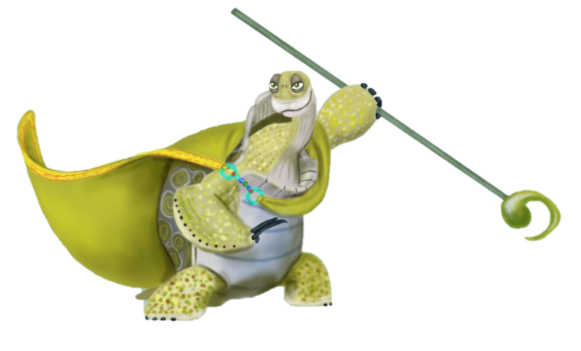

Master Oogway
{ Hehe, Hear that?!?! I added music this time! Go ahead let me hear you say my site is not good! - Nikola}
Inner peace..
Inner peace..
Inner peace..
I sensed that you were comming. Welcome! Let me first
introduce myself! My name is Oogway, Master Oogway, I am the
guy who perfected Kung Fu! I have focues my life on practicing
the art of Kung Fu, and it's power for good. I have taught
many generations, and I personaly chose the Dragon warrior.
So many of you are wondering why was not picking Po an accident,
I mean he is 300 pounds and fell from the sky, why would I chose him?
Well first, you must know that, there are NO accidents.
It is all destiny!
In my younger years, when I was a warrior leading a great
army! I was fighting by my friend Kay's side, we were brothers.
One day I was badly injured and Kay had to cary me for days!
Finally we found a village. Not any kind of village, a village of Pandas!
All of them were masters of Chi. They used the so called chi to heal me,
and, even teach me Chi!...
Back to the Po thing. So when I saw Po, I first saw the past! Then,
I saw the future! Both sides of the Yin and Yang!
And it turned out that my choice was the correct one :),
Po, was my true successor! Awesome!